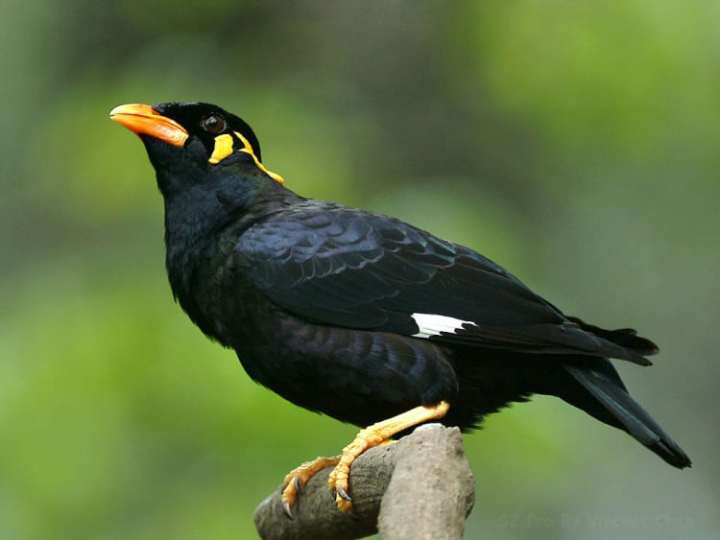

Beo Bird
The Common Hill Myna (Gracula religiosa), sometimes spelled "mynah" and formerly simply known as "Hill
Myna", is the myna bird most commonly seen in aviculture, where it is often simply referred to by the latter
two names. It is a member of the starling family (Sturnidae), resident in hill regions of South Asia and
Southeast Asia. The Sri Lanka Hill Myna, a former subspecies of G. religiosa, is generally accepted as a
separate species G. ptilogenys nowadays. The Enggano Hill Myna (G. enganensis) and Nias Hill Myna (G.
robusta) are also widely accepted as specifically distinct, and many authors favor treating the Southern
Hill Myna (G. r. indica) from the Nilgiris and elsewhere in the Western Ghats of India as a separate species
also.

gambar 1
 gambar 2
gambar 2 gambar 3
gambar 3 gambar 4
gambar 4